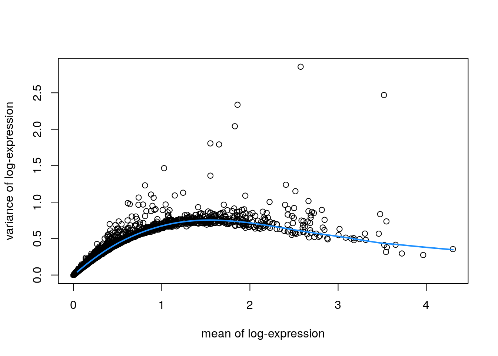

Chapter 7 Feature selection
7.1 Background
Here we apply feature selection methods to identify highly variable genes (HVGs) or spatially variable genes (SVGs), which can then be investigated individually or used as the input for further downstream analyses.
7.2 Previous steps
Code to run steps from the previous chapters to generate the SpatialExperiment object required for this chapter.
# LOAD DATA
library(SpatialExperiment)
library(STexampleData)
spe <- Visium_humanDLPFC()
# QUALITY CONTROL (QC)
library(scater)
# subset to keep only spots over tissue
spe <- spe[, colData(spe)$in_tissue == 1]
# identify mitochondrial genes
is_mito <- grepl("(^MT-)|(^mt-)", rowData(spe)$gene_name)
# calculate per-spot QC metrics
spe <- addPerCellQC(spe, subsets = list(mito = is_mito))
# select QC thresholds
qc_lib_size <- colData(spe)$sum < 600
qc_detected <- colData(spe)$detected < 400
qc_mito <- colData(spe)$subsets_mito_percent > 28
qc_cell_count <- colData(spe)$cell_count > 10
# combined set of discarded spots
discard <- qc_lib_size | qc_detected | qc_mito | qc_cell_count
colData(spe)$discard <- discard
# filter low-quality spots
spe <- spe[, !colData(spe)$discard]
# NORMALIZATION
library(scran)
# calculate logcounts using library size factors
spe <- logNormCounts(spe)7.3 Highly variable genes (HVGs)
We use methods from scran (Lun et al. 2016) to identify a set of top highly variable genes (HVGs), which can be used to define major cell types. These methods were originally developed for single-cell RNA sequencing (scRNA-seq) data, so here we are making the assumption that spots can be treated as equivalent to cells.
Note that HVGs are defined based only on molecular features (i.e. gene expression), and do not take any spatial information into account. If the biologically meaningful spatial information in this dataset mainly reflects spatial distributions of major cell types, then relying on HVGs for downstream analyses may be sufficient. But if there are additional important spatial features in the dataset, then it may be more meaningful to investigate spatially variable genes (SVGs).
To identify HVGs, we first remove mitochondrial genes, since these are very highly expressed in this dataset and are not of main biological interest.
# remove mitochondrial genes
spe <- spe[!is_mito, ]
dim(spe)## [1] 33525 3524Then, we apply methods from scran. This gives us a list of HVGs, which can be used for further downstream analyses. The parameter prop defines how many HVGs we want. For example prop = 0.1 returns the top 10% of genes.
library(scran)
# fit mean-variance relationship
dec <- modelGeneVar(spe)
# visualize mean-variance relationship
fit <- metadata(dec)
plot(fit$mean, fit$var,
xlab = "mean of log-expression", ylab = "variance of log-expression")
curve(fit$trend(x), col = "dodgerblue", add = TRUE, lwd = 2)
# select top HVGs
top_hvgs <- getTopHVGs(dec, prop = 0.1)
length(top_hvgs)## [1] 14387.4 Spatially variable genes (SVGs)
Alternatively, we can apply methods to identify spatially variable genes (SVGs) instead of HVGs. SVGs are defined as genes with a spatially correlated patterns of expression.
Simple approaches to identify SVGs include standard statistical measures such as Moran’s I statistic or Geary’s C statistic, which can be used to rank genes by the observed spatial autocorrelation.
Sophisticated statistical methods to identify SVGs adapted to the properties of SRT data have also been developed, including the following:
nnSVG: available as an R package from Bioconductor and described by Weber et al. (2023)
SPARK-X: available as an R package from GitHub and described by Zhou et al. (2021)
SPARK: available as an R package from GitHub and described by Sun et al. (2020)
SpatialDE: available as a Python package from GitHub and described by Svensson et al. (2018)